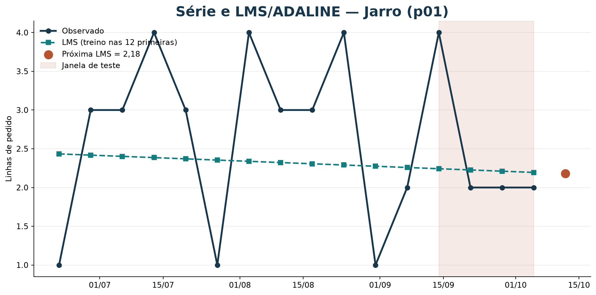
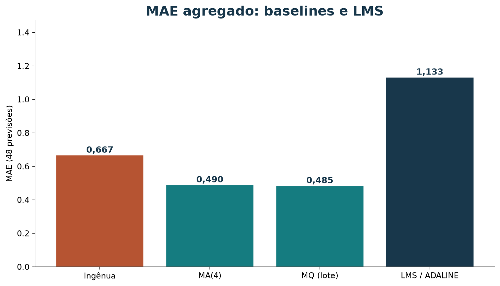

Previsão de demanda com perceptron / LMS (ADALINE)
Leia a versão web com o explorador.
Esta aula liga a reta dos mínimos quadrados a um modelo que atualiza pesos a cada exemplo. Na demanda semanal usamos a regra LMS (ADALINE): erro contínuo, não classificação 0/1. Uma subseção curta de funções booleanas cobre separabilidade linear (AND, OR, XOR).
Os dados de demanda são sintéticos
(dados/vendas_semanais.csv).
Roteiro
| Tempo | Atividade |
|---|---|
| 10 min | Separabilidade linear em AND / OR / XOR |
| 10 min | Formatar entradas e a regra LMS |
| 15 min | Treinar na série, ver MSE por época |
| 15 min | Walk-forward e comparar com MA / MQ |
| 15 min | Explorador BI |
| 15 min | Endpoint BentoML mínimo |
1. Separabilidade linear (booleanos)
Em classificação binária, um perceptron clássico traça um hiperplano. Com duas entradas 0/1:
| Função | Separável? |
|---|---|
| AND | Sim |
| OR | Sim |
| XOR | Não |
Desenhe os quatro pontos no plano e argumente. XOR exige uma fronteira que uma única reta não realiza — daí redes com mais de uma camada depois.
2. Da classificação à previsão contínua
Na demanda, o alvo é a contagem de linhas de pedido, não um bit. A unidade ADALINE / LMS prevê
e atualiza os pesos com o erro contínuo:
Isso é o mesmo espírito do perceptron (passo a passo), com perda quadrática em vez de erro 0/1. Não é backprop de uma rede multilcamada.
3. Treinar nas 12 primeiras semanas
uv run python scripts/gerar_bi_demanda_perceptron.pyO script grava
material/bi-demanda-perceptron/pesos_p01.json e o painel.
Para Jarro (p01), o treino LMS (80 épocas, η = 0,01) nas 12
primeiras semanas produz bias e inclinação próximos à reta de mínimos
quadrados em lote — a série é curta e sintética.
A curva de MSE por época deve cair e estabilizar. Se não cair, revise η ou o número de épocas.
4. Avaliar no tempo
Nas quatro últimas semanas, a cada origem o modelo re-treina só com o passado e prevê a semana seguinte (piso em zero). Compare MAE com ingênua, MA(4) e MQ em lote — mesmas 48 previsões.
5. Explorador BI
O explorador mostra série, MSE por época, MAE agregado e tabela. Versão web: demanda-perc.
Experimente o LMS neste tutorial
Escolha produto e método. Veja a curva de MSE e compare o MAE com os baselines. As 16 semanas são sintéticas.



6. Endpoint BentoML
Com os pesos gerados:
uv run bentoml serve service_perceptron_demanda:PrevisaoLmsDemanda --reloadChame a API prever com indice_semana (por
exemplo 16 para a semana após o histórico). O mesmo cálculo
local:
import json
from pathlib import Path
pesos = json.loads(Path("material/bi-demanda-perceptron/pesos_p01.json").read_text())
t = 16
bruto = pesos["bias"] + pesos["inclinacao"] * t
print(max(0.0, bruto))Os dois caminhos devem coincidir.
7. Exercício
- Marque AND, OR e XOR como separáveis ou não.
- Formate uma tabela t → y para um produto (cinco linhas bastam).
- Descreva o split: 12 treino / 4 teste, sem embaralhar.
- Rode o gerador e anote o MSE da última época e o MAE LMS de
p01. - Suba o serviço e compare a previsão para
t = 16com o JSON de pesos.
Referência
- ADALINE / LMS: atualização pelo erro contínuo (Widrow–Hoff).
- Código:
scripts/lms_demanda.py,scripts/gerar_bi_demanda_perceptron.py,service_perceptron_demanda.py.